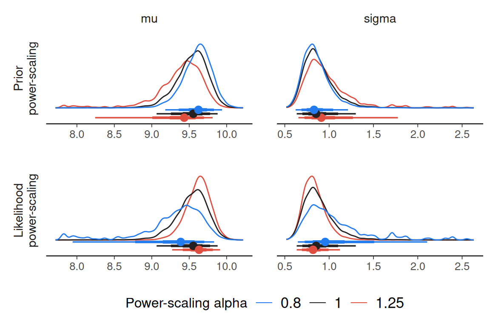

priorsense is compatible with models fit with either rstan and cmdstanr. To use priorsense with a Stan model, the log prior and log likelihood evaluations should be added to the model code.
Consider the univariate normal model with unknown mu and sigma available viaexample_powerscale_model("univariate_normal"). In Stan, lprior and log_lik variables can be defined as below. By also defining separate lprior_mu and lprior_sigma variables, it will be possible to check the sensitivity for each prior separately.
model <- example_powerscale_model("univariate_normal")data {
int<lower=1> N;
array[N] real y;
}
parameters {
real mu;
real<lower=0> sigma;
}
transformed parameters {
real lprior; // joint prior
real lprior_mu = normal_lpdf(mu | 0, 1); // marginal prior density for mu
real lprior_sigma = normal_lpdf(sigma | 0, 2.5); // marginal prior density for sigma
lprior = lprior_mu + lprior_sigma;
}
model {
// priors
target += lprior;
// likelihood
target += normal_lpdf(y | mu, sigma);
}
generated quantities {
vector[N] log_lik;
// likelihood
for (n in 1:N) log_lik[n] = normal_lpdf(y[n] | mu, sigma);
}We first fit the model using Stan:
fit <- rstan::stan(
model_code = model$model_code,
data = model$data,
refresh = FALSE,
seed = 123
)Then the priorsense functions will work as usual.
Sensitivity based on cjs_dist
Prior selection: all priors
Likelihood selection: all data
variable prior likelihood diagnosis
mu 0.433 0.641 potential prior-likelihood conflict
sigma 0.359 0.674 potential prior-likelihood conflict
powerscale_sensitivity(fit, prior_selection = "sigma")Sensitivity based on cjs_dist
Prior selection: sigma
Likelihood selection: all data
variable prior likelihood diagnosis
mu 0.006 0.641 -
sigma 0.010 0.674 -
powerscale_sensitivity(fit, prior_selection = "mu")Sensitivity based on cjs_dist
Prior selection: mu
Likelihood selection: all data
variable prior likelihood diagnosis
mu 0.438 0.641 potential prior-likelihood conflict
sigma 0.369 0.674 potential prior-likelihood conflict
powerscale_plot_dens(fit)
In some cases, setting moment_match = TRUE will improve unreliable estimates at the cost of some further computation. This requires the iwmm package.